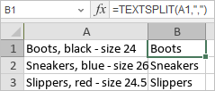

TEXTSPLIT Funkcija
TEXTSPLIT funkcija je jedna od tekstualnih i podataka funkcija. Koristi se za razdvajanje tekstualnih nizova pomoću razdelnika kolona i redova.
Sintaksa
TEXTSPLIT(text, col_delimiter, [row_delimiter], [ignore_empty], [match_mode], [pad_with])
TEXTSPLIT funkcija ima sledeće argumente:
| Argument | Opis |
|---|---|
| text | Tekst koji želite da razdvojite. |
| col_delimiter | Opcionalni argument. Koristi se da se odredi tekst koji označava mesto gde se tekst deli po kolonama. |
| row_delimiter | Opcionalni argument. Koristi se da se odredi tekst koji označava mesto gde se tekst deli po redovima. |
| ignore_empty | Opcionalni argument. Koristi se da se odredi FALSE kako bi se kreirala prazna ćelija kada su dva razdelnika jedan za drugim. Po default-u je TRUE, što kreira praznu ćeliju. |
| match_mode | Opcionalni argument. Koristi se da se pretraži tekst za podudaranje razdelnika. Po default-u se koristi pretraga koja je osetljiva na velika/mala slova. |
| pad_with | Koristi se da se odredi vrednost kojom se popunjava rezultat. Po default-u je #N/A. |
Napomene
Napomena: ovo je array formula. Da biste saznali više, pročitajte članak Insert array formulas.
Kako primeniti TEXTSPLIT funkciju.
Primeri
Slika ispod prikazuje rezultat koji vraća TEXTSPLIT funkcija.
